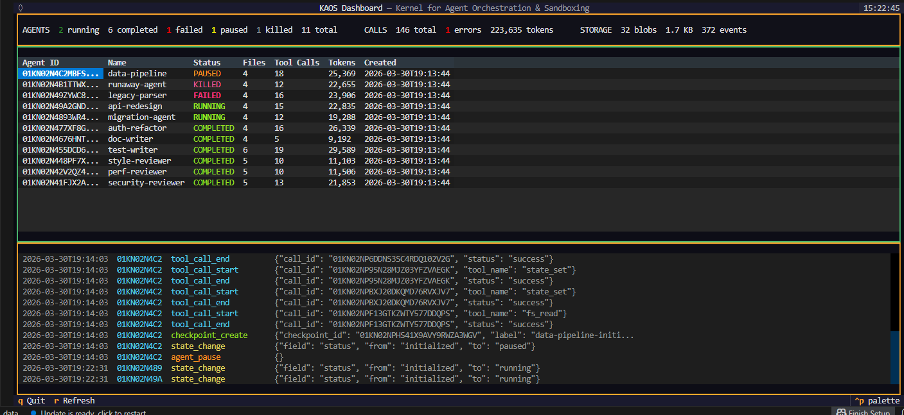

Architecture

KAOS gives every AI agent its own virtual filesystem with checkpoints, audit trails, and rollback. Meta-Harness automatically finds the best prompt & retrieval strategy for your LLM. Everything runs locally on your GPU — zero API costs.
You're running multiple AI agents. Here's what goes wrong.
Two agents write to the same file. One overwrites the other's work. You don't find out until production.
It made 47 tool calls, modified 12 files, and now the codebase is broken. What did it actually do? In what order? Good luck with git log.
The refactor agent broke everything. You git reset --hard and lose the work of the 3 other agents that were fine.
Agent crashes mid-task. Its progress, findings, intermediate files — all gone. Start over from scratch.
How many tokens did each agent use? Which tool calls failed? What files did agent X touch? You're grep-ing through logs — if you have logs.
Every agent call hits a cloud API. Your proprietary code, internal docs, and trade secrets travel over the wire to someone else's servers.
from kaos import Kaos db = Kaos("project.db") # Each agent is isolated — they cannot see each other's files agent_a = db.spawn("refactorer") agent_b = db.spawn("test-writer") db.write(agent_a, "/src/auth.py", b"# refactored auth module") db.write(agent_b, "/src/auth.py", b"# test stubs for auth") # Both wrote to "/src/auth.py" — no conflict. Each has their own copy. # Checkpoint before risky operations cp = db.checkpoint(agent_a, label="before-migration") # ... agent does something dangerous ... db.restore(agent_a, cp) # roll back just this agent, others untouched # What exactly did it do? Query the audit trail with SQL. db.query("SELECT event_type, payload FROM events WHERE agent_id = ?", [agent_a])
Everything lives in one .db file. Copy it to back up. Send it to a teammate. Query with any SQLite client.
Other frameworks focus on prompt chaining. KAOS focuses on the runtime infrastructure underneath.
| Problem | LangChain / CrewAI / AutoGen | KAOS |
|---|---|---|
| Agent isolation | Shared filesystem | Enforced per-agent VFS |
| Audit trail | DIY logging | Append-only event journal |
| Rollback one agent | Not possible | db.restore(agent, cp) |
| Debug a failed agent | Read logs, hope for the best | SELECT * FROM events |
| Portable runtime | Cloud-dependent / in-memory | Single .db file, anywhere |
| State persistence | Framework-specific, lost on crash | SQLite — crash-safe |
| Token / cost tracking | Varies, often manual | SELECT SUM(token_count) ... |
KAOS isn't a replacement — it's the runtime layer they're missing. Use it underneath LangChain, or standalone with local LLMs.
Every VFS operation is SQL-scoped with WHERE agent_id = ?. Physically impossible for one agent to access another's files. Optional FUSE tier adds OS-level mount + namespace isolation.
14 event types cover every operation: file reads, writes, deletes, tool calls with timing and token counts, state changes, lifecycle events. Query with SQL.
Snapshot files + state at any point. Restore to any checkpoint. Diff two checkpoints to see exactly what changed. Auto-checkpoints every N iterations.
GEPA router classifies task complexity and picks the right model. Trivial task? 7B. Complex architecture? 70B. Works with any OpenAI-compatible endpoint.
Files stored as SHA-256 blobs with zstd compression. Identical files across agents are deduplicated automatically. Reference counting with GC.
The entire runtime is one .db file. Back it up with cp. Send it to a colleague. Query with DBeaver, DataGrip, or sqlite3. No cloud, no Docker.
Run up to 8 concurrent agents (configurable) with semaphore control. Thread-local DB connections. MVCC isolation via SQLite WAL mode.
No openai, no litellm, no langchain. Just httpx, click, rich, textual, mcp, pyyaml, zstandard, ulid-py. 44 packages total.
11 MCP tools let Claude Code spawn agents, read/write files, checkpoint, restore, diff, and run SQL queries — all as native tool calls.
Monitor all agents in real time — status, files, tool calls, token usage, and a streaming event log.

$ kaos dashboard
Agent orchestration + automated harness optimization for engineering and business
4 agents review the same code from different angles — security, performance, style, and test coverage — all running in parallel. Each writes to its own isolated VFS. No conflicts. Combine the results or query them with SQL.
results = await ccr.run_parallel([ {"name": "security", "prompt": "Find vulns..."}, {"name": "perf", "prompt": "Find perf issues..."}, {"name": "style", "prompt": "Review best practices..."}, {"name": "tests", "prompt": "What's missing?"}, ])
Checkpoint before risky operations. If an agent breaks something, restore just that agent — other agents keep running untouched. Diff two checkpoints to see exactly what changed: files, state, tool calls.
cp = db.checkpoint(agent, label="pre-migration") try: await ccr.run_agent(agent, "Migrate schema v3") except Exception: db.restore(agent, cp) # only this agent rolls back
An agent went rogue — 47 tool calls, 12 files modified, codebase broken. Query the complete event timeline, failed tool calls, token usage, and file changes with SQL. No log files to grep.
db.query("""SELECT tool_name, error, duration_ms FROM tool_calls WHERE agent_id = ? AND status = 'error' ORDER BY timestamp""", [agent_id])
Predict customer lifetime value from profile + behavior data. Meta-Harness discovers segment-aware prompting (enterprise vs. startup need different framing) and a two-step approach: predict churn first, then CLV conditional on retention.
bench = CLVBenchmark() # your customer data search = MetaHarnessSearch(db, router, bench, SearchConfig(objectives=["+accuracy", "-context_cost"])) # Discovered: churn-first reasoning beats single-step by 25pts
Generate personalized email subjects, push notifications, and SMS per customer segment. Meta-Harness learns that enterprise wants ROI language, consumers want urgency, and referencing the customer's most-used feature boosts engagement.
bench = CRMCampaignBenchmark() # campaign history search = MetaHarnessSearch(db, router, bench, SearchConfig(objectives=["+relevance", "-context_cost"])) # Discovered: different harness per segment outperforms generic
Review flagged transactions for fraud. Meta-Harness finds that pre-computing red flags (amount deviation, unusual country, velocity) and showing contrastive examples (similar fraud vs. legitimate) improves F1 by 20 points over basic prompting.
bench = FraudDetectionBenchmark() # transaction data search = MetaHarnessSearch(db, router, bench, SearchConfig(objectives=["+f1_score", "-context_cost"])) # Pareto: [high recall] ↔ [balanced F1, fewer tokens]
Route tickets to the right team (billing, technical, account, general). The proposer agent reads execution traces, discovers that ambiguous tickets need contrastive examples, and that two-stage verification beats single-shot classification.
bench = SupportTicketBenchmark() search = MetaHarnessSearch(db, router, bench, SearchConfig(max_iterations=10, candidates_per_iteration=2)) # Full search stored in one queryable .db file
Which solved problems should you retrieve from a 500K corpus to help solve an Olympiad problem? Meta-Harness discovers domain-aware routing: different retrieval strategies for geometry, combinatorics, number theory, and algebra.
bench = get_benchmark("math_rag", corpus_path="535k_solved_problems.jsonl") search = MetaHarnessSearch(db, router, bench, SearchConfig(max_iterations=15))
Optimize a coding agent's harness. The paper's key discovery: gathering an environment snapshot before the agent loop (languages, tools, memory) eliminates 2-4 wasted exploratory turns. Only ~80 lines added, no existing code modified.
bench = get_benchmark("agentic_coding", tasks_path="89_dockerized_tasks.jsonl") search = MetaHarnessSearch(db, router, bench, SearchConfig(objectives=["+pass_rate"]))
Your GPU. Your models. Your data stays on your machine.